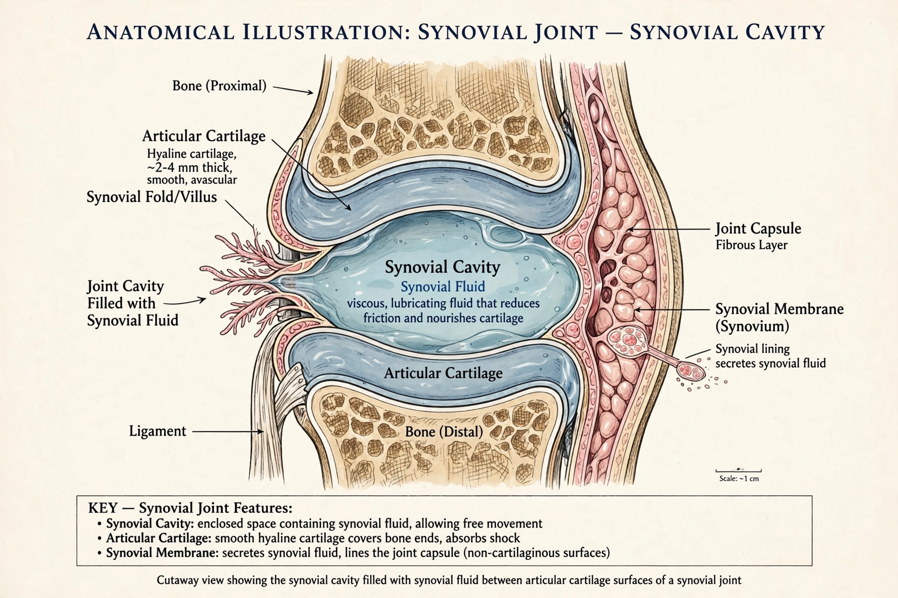

| Synovial cavity | |
|---|---|
 | |
| System | Musculoskeletal |
| Part of | Synovial joint |
| Contains | Synovial fluid |
The synovial cavity (or joint cavity) is the fluid-filled space between the articulating surfaces of a synovial joint, enclosed by the joint capsule and lined by the synovial membrane. It is a defining feature that distinguishes synovial joints from fibrous and cartilaginous joints.
The cavity contains a small volume of synovial fluid — normally less than 1 mL in the knee's resting state in some descriptions, though the knee can hold several millilitres — a dialysate of plasma enriched with hyaluronic acid and lubricin secreted by synoviocytes. The fluid lubricates cartilage, reduces friction to near ice-on-ice levels, absorbs shock, and nourishes avascular articular cartilage.
Excess fluid (effusion) from trauma, infection, or arthritis distends the cavity and limits movement. Aspiration of the cavity (arthrocentesis) is used diagnostically for septic arthritis, gout, and haemarthrosis, and therapeutically for injections. In osteoarthritis and rheumatoid arthritis, cavity contents and lining change markedly.